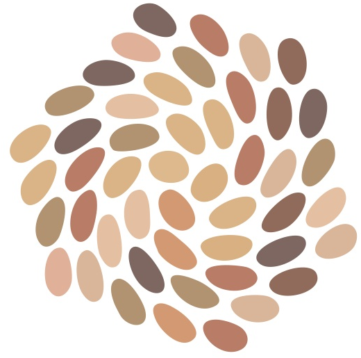

気候危機・地政学的分断・AI革命が重なり、段階的シフトが同時並行で起きている。過去の延長で未来を語ることは困難になった。411の弱シグナル分析で、地政学140件／AI51件／法と統治49件／気候44件が検出されている。
科学的根拠と合意形成では意思決定のスピードが追いつかない。一方、技術で力を増幅された独裁的判断の危険性は増している。Voros未来予測22,546件に現れる楽観バイアス比7.7:1は、望ましくない未来の過小評価を示す。
AIが情報と実行を肩代わりする社会では、人間固有の「瞬間的判断の知性」が希少価値を持つ。これは古来の伝統知に埋め込まれている。ホクレア号50周年（2026年5月）は、伝統航法術の現代的意義を象徴する節目となる。
未来は、未知の彼方からやって来るものではない。先住民の航海術、土地に根ざした知恵、世代を超えて受け継がれた身体的判断。それらの中に、"次の世界のかたち"はすでに宿っている。
ウェイファインディングと未来学の構造的平行（5ステップ）から、不確実な時代を航海する型を構築する。
125年PESTLE x CLA 4階層 x 伝統知フィールドトリップ。時代認識と未来洞察の基盤を構築する。
講座・教科書・フォーラムの3形態で、未来創造プロセスを社会に広く伝播・民主化する。
1901~2026年の125年間、PESTLE x CLA 4階層による36次元メタ解析を実施。共通言語を獲得する。
国内FT 1.5日x2 + ハワイFT 2.5日x1。ホクレア・クルー／ハワイ大学と連携し、伝統知と身体知性を統合。
UoCで「未来創造実践者ゼミ」を構築し、実行プログラムに落とし込む。基礎編（未来学）と応用編（Wayfinding）の2段階カリキュラム。
ゼミで用いる基礎資料を編纂するとともに、世の中に広く未来創造プロセスを伝えるための「伝道師」としての役割を持たせる。
未来創造プロセスを各セクター・実践者に共有しながら民主化による共創を実現する。適応戦略の幅を広げる互助のリソース確保として実行する。
未来学の知見とソーシャルイノベーションの知見の両軸から編纂する。ウェイファインディングと因果階層分析を実践的に統合した、世界初の未来創造実践テキスト。ブックレット形式で広く頒布可能とする。
基礎編としての未来学（CLA x PESTLE x 弱シグナル x 望ましい未来）、応用編としてのウェイファインディング（身体知性と適応航法）。UoCで実行されるゼミ形式の実践プログラム。
基礎的なリサーチ&型の開発プロジェクトを複数社で協働実施する。民間企業・NPO・学術機関・実践者ネットワークが共に参画する、共有財産としての知の基盤を形成する。
構造が先にあり、知覚がそれに従うのではなく、
知覚が先にあり、構造がそれを整理する --
この順序が逆転したとき、
フォーサイトはウェイファインディングになる。
PESTLEを「順番に埋めるもの」ではなく「同時に世界を眺める認知習慣」として内在化する。
CLAの神話層を「哲学的反省の付録」ではなく「なぜこのシグナルを重要と思ったか」への自己審問とする。
フォーサイトを「未来の制御」ではなく「未来の中でよりよく生きるケアの実践」として位置づける。
未来洞察実装プロジェクト2026では、伝統知と未来学を架橋する「未来創造の型」を共につくるパートナーを募集しています。フォーサイトの民主化を、共に実現しませんか。
お問い合わせ